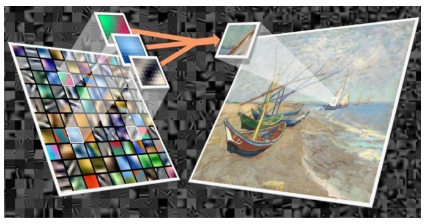
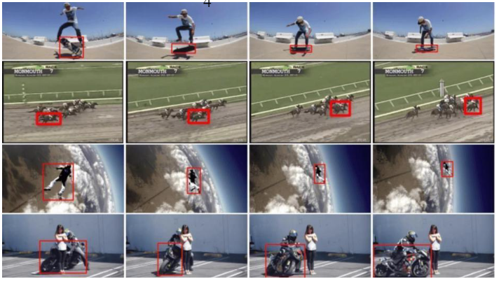

Sparse based visual object Tracking
ROLE:
We are four members as a team.
I am Second member of the team.
I collect several research papers from different websites like IEEE, Research Gate, Elsewhere, Springer,etc.
A brief explanation:
Objects are real world entities that can be monitored continuously under varying conditions using Visual Tracking methods.
However, visual object tracking faces various challenging issues because tracking is influenced by illumination change, pose change, partial occlusion and background clutter.
Sparse representation-based appearance modeling and dictionary learning that optimize tracking history have been proposed as one possible solution to overcome the problems of visual object tracking.
Using an online dictionary for learning and updating by selecting similar dictionaries that have high probability makes it possible to track the target object in a variety of environments.
Qualitative and quantitative experimental results, including comparison to the current state of the art visual object tracking algorithms, validate that the proposed tracking algorithm performs favorably with changes in the target object and environment for benchmark video sequences.

